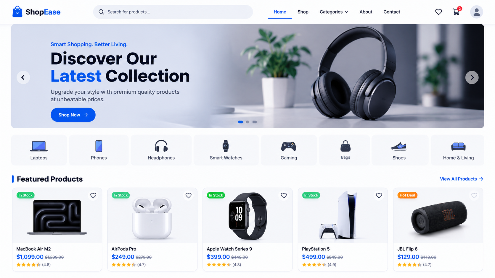

Data Engineer & DataOps Specialist
Yousef Adel
Computer & Information Science graduate specializing in scalable ETL/ELT pipelines, resilient DataOps automation, and scheduled workflows using Python, optimized SQL, and Apache Airflow.
Building efficient data pipelines and reliable data solutions.
I'm a Data Engineer passionate about working with data, solving technical problems, and building systems that turn raw information into valuable insights. I enjoy understanding how data is collected, processed, transformed, and delivered in a reliable and organized way.
My main focus is on developing ETL/ELT pipelines, automating data workflows with Apache Airflow, and working with Python and SQL to process and manage data efficiently. I'm also interested in DataOps, using Docker, workflow automation, and data quality checks to make data systems more consistent and dependable.
Tech Stack
Languages
Core scripting, database querying, procedural algorithms, and application logic.
Data Engineering
Workflow orchestration, transformation pipelines, data validation, and deduplication.
Databases & Storage
Relational modeling, indexing strategies, document persistence, and SQL tuning.
DevOps & Cloud Tools
Container orchestration, CLI scripting, REST APIs, and automated deployment.
Work Experience
DataOps Intern
National Telecommunication Institute (NTI)
Practical experience developing scalable data processing workflows, orchestrating batch jobs, and working with modern DataOps tooling in simulated enterprise environments.
- Developed end-to-end data processing workflows and transformations using Python and optimized SQL queries.
- Built and managed resilient ETL pipelines using Apache Airflow DAGs with retry policies and SLA alerting.
- Engineered database schemas and ingestion routines in PostgreSQL and SQL Server.
- Employed Docker containers and Linux terminal environments for isolated testing and reproducible deployments.
- Implemented automated data validation checks, error-handling routines, and exploratory CI/CD practices on Microsoft Azure.

DashFlow - Analytics Dashboard
A modern analytics dashboard designed to visualize business performance through interactive charts, KPI metrics, sales reports, traffic analysis, and real-time data insights. Provides a clean interface for monitoring key business indicators and making data-driven decisions.

E-Commerce Platform
A high-performance responsive platform featuring dynamic product catalogs, state management, wishlist persistence, real-time search, category filtering, and checkout flows.

CRUD Product & Inventory System
A robust client-side inventory management application supporting create, read, update, delete operations, multi-attribute search filtering, and local data persistence.
Education & Training
Computer & Information Science
ElShrouk Academy
Bachelor's degree with a final cumulative grade of Very Good. Rigorous coursework in algorithms, database engineering, computer architecture, and software development.
DataOps & Engineering Track
National Telecommunication Institute
Intensive technical qualification focusing on automated ETL pipelines, distributed task workflows via Apache Airflow, Docker container management, and continuous data quality validation.
Let's build reliable data systems together.
I am actively interviewing for full-time Data Engineer and DataOps roles. Whether you have an open position, an exciting project, or simply want to connect, feel free to reach out.